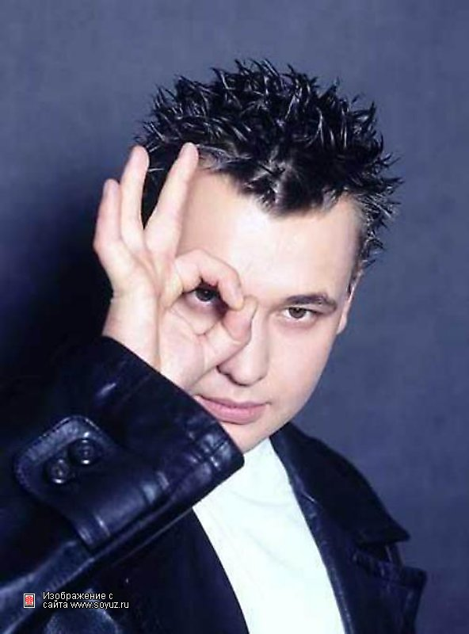
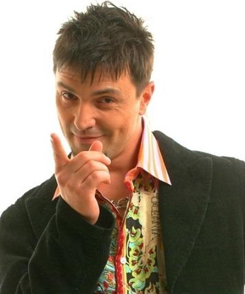

Главная | Общая информация | История | Дискография | Участники | Источники | Заказать | Контакты
| Участник | Роль в группе | Годы участия | Фото | Ключевые вклады |
| Сергей Жуков | Вокалист, основной автор | 1993 - настоящее время |
 | Автор большинства хитов; после 2006 года продолжил проект под тем же названием; отвечает за концертные шоу и перезаписи старых треков |
| Алексей Потехин | Клавишные, аранжировки, бэк‑вокал | 1993–2006 |
 | Отвечал за студийную часть и аранжировки ранних хитов; вместе с Жуковым сформировал фирменный звук группы в 90‑х; соавтор концепции раннего репертуара |
© Все права защищены.